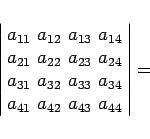
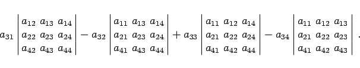

Eine Unterdeterminante (n-1)-ter Ordnung des Elements  einer Determinante n-ter Ordnung heißt diejenige Determinante, die sich aus der gegebenen Determinante durch Streichen der
einer Determinante n-ter Ordnung heißt diejenige Determinante, die sich aus der gegebenen Determinante durch Streichen der  -ten Zeile und
-ten Zeile und  -ten Spalte ergibt.
-ten Spalte ergibt.
| Beispiel |
|
Entwicklung einer Determinante 4. Ordnung nach den Elementen der 3. Zeile: 

|